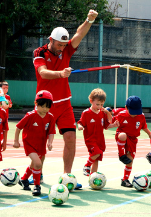

|
Coaching at the British Football Academy
 The British Football Academy is always on the lookout for outstanding coaches to add to its staff. We're looking for reliable, dedicated, self-starting, British nationals with a background in football, football coaching and education (a coaching licence from a recognised football governing body such as the English Football Association would also be an advantage, although for career coaches who prove their dedication, commitment and overall value to the Academy, arrangements may be made to have them licensed by The FA, as part of our on-going coach development programme). The British Football Academy is always on the lookout for outstanding coaches to add to its staff. We're looking for reliable, dedicated, self-starting, British nationals with a background in football, football coaching and education (a coaching licence from a recognised football governing body such as the English Football Association would also be an advantage, although for career coaches who prove their dedication, commitment and overall value to the Academy, arrangements may be made to have them licensed by The FA, as part of our on-going coach development programme).
(*Please note only applications made by those currently residing in Japan will be considered).
The British Football Academy, at the present moment, has no positions available for coaches and is only looking for interns/volunteers:
• ACTIVELY LOOKING FOR: INTERNS/VOLUNTEERS:
Typically high school students (Varsity football players preferred) who may be seeking some work experience as part of their studies, or prior to their application to University to study sports-related courses, or university students looking to supplement their sports-related degrees. Also, seasoned players with free time, looking to give something back to football, by inspiring and educating the next generation of footballers.
• SEASONAL SOCCER CAMP COACHES: (Summer Camps, Winter Camps, Spring Camps)
As above, however hourly fees commensurate with experience/qualifications.
PART TIME COACHES:
Looking for enthusiastic British nationals with a passion for football, an aptitude for teaching children and the ability to learn on-the-job under the guidance of senior coaches. Part time coaches would be expected to work at least one day of the weekend, if not both, and/or during the week (afternoons/early evenings as required). After a probationary/training period, part time coaches will be expected to plan and deliver co-coached sessions to the majority of BFA age groups. Working schedules can, in some instances, be tailored to suit. Those looking to become semi-full time or full time as they gain experience and qualifications at the Academy will be looked at favourably. A football coaching qualification such as the FA Level 1 Certificate in Coaching Football may be an advantage, but not a prerequisite. Payment commensurate with experience/qualifications. Valid working Visa/Working Holiday Visa/Spouse Visa required.
• SEMI FULL TIME COACHES:
British nationals with a proven background in football and football education a definite plus. Individuals looking to the British Football Academy with a long-term view of possibly becoming a full-time Head/Senior Coach as experience and qualifications are gained will be looked at favourably. Semi-full time coaches will be expected to liaise closely with senior coaching staff on all aspects of the Academy's operations - including annual programme design and implementation, session planning, delivery and evaluation. Semi-full time coaches will be proactive when it comes to session delivery and keen to regularly bring new coaching ideas and methods to the table. Semi-full time coaches may also be charged with 'team' as well as regular session coaching duties. A schedule incorporating weekend and weekday work could be tailored to suit. A football coaching qualification such as the FA Level 1 or Level 2 Certificate in Coaching Football may be an advantage. Payment commensurate with experience/qualifications. Valid working Visa/Working Holiday Visa/Spouse Visa required. (*Visa sponsorship may be an option in some cases).
• FULL TIME/HEAD/SENIOR COACHES:
Full time coaches are charged with a great deal of responsibility that extends beyond the football pitch. As well as possessing the skills and experience to consistently deliver effective, high-calibre, high-octane coaching sessions to all age groups, our British full time coaches are also charged with the ongoing development and mentoring of junior coaches, coach assessment and evaluation, as well as new business development. Full time coaches will have selected the British Football Academy and Footy Japan KK as their career choice and as such will have a large degree of autonomy and support as regards their selected path in football education and provisions will be made to aid coaches attainment of goals, including, but not limited to, acquiring coaching accreditation up to pro level (FA Level 3 / UEFA B). Full time coaches will have an essential role to play in the design, growth and development of the Academy and be expected to liaise closely with the English FA and keep abreast of grassroots and professional Academy coaching practices, with a view to implementing them here in Japan. Full time coaches will possess superlative communication skills, a recognized coaching qualification such as the FA Level 1 or Level 2 Certificate in Coaching Football and will be as adept at coaching 3 year olds, as they will a 15 year old with professional football prospects. Full time coaches will be required to handle a number of administrative duties and as such computer proficiency a definite plus. Annual/Monthly salary commensurate with experience. Visa sponsorship available for the right candidates.
For more information about coaching at the British Football Academy, please send your CV and a brief summary stating why you think you'd be an asset to the British Football Academy to: coaching@footyjapan.com
|
|